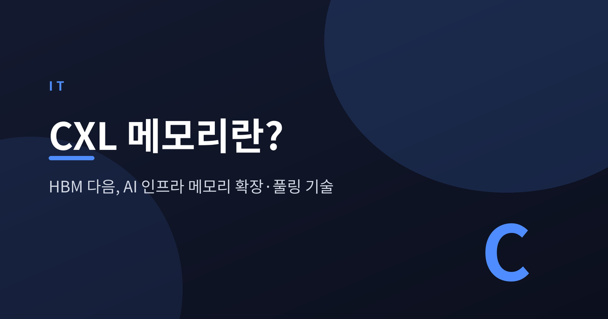
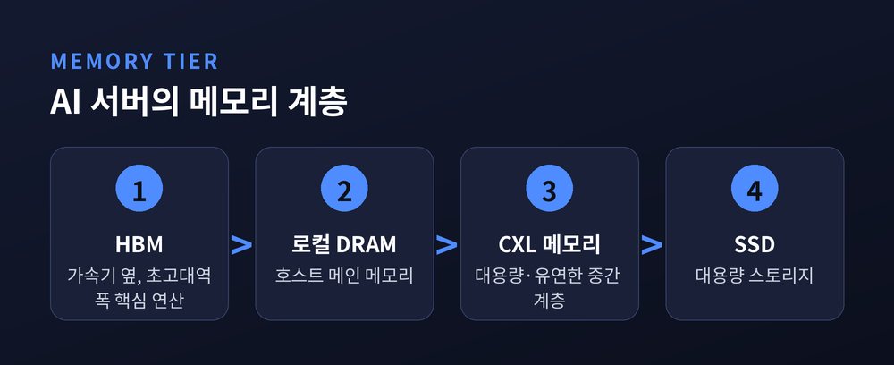
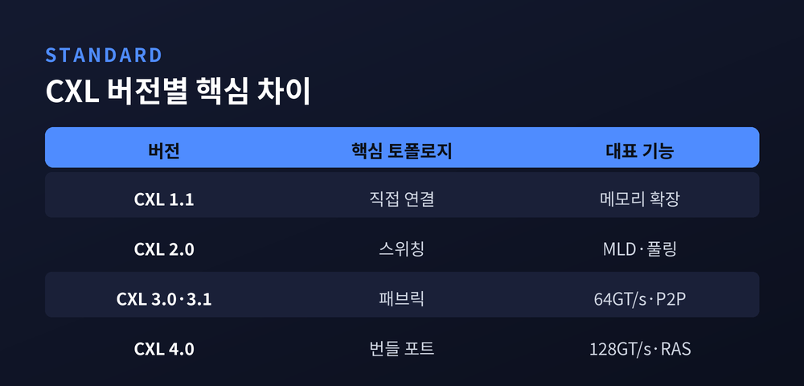
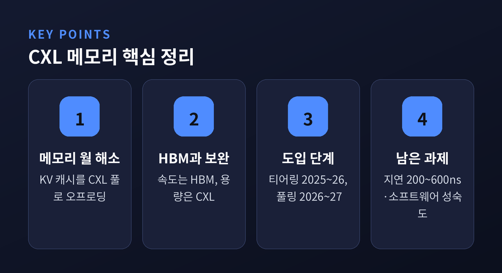

CXL 메모리란? HBM 다음 AI 인프라 메모리 풀링·확장 기술 정리

AI 인프라의 병목이 연산에서 메모리로 옮겨가고 있습니다. 이번 글에서는 그 해법으로 떠오른 CXL 메모리를, 표준 버전 차이부터 HBM과의 관계, 기업 동향과 한계까지 정리해 보겠습니다.
먼저 핵심부터 세 줄로 요약하겠습니다.
- CXL은 CPU·GPU·메모리를 캐시 일관성을 유지한 채 잇는 개방형 표준으로, 메모리 확장·풀링·공유를 가능하게 합니다.
- CXL은 HBM을 대체하지 않습니다. HBM은 초고대역폭을, CXL은 대용량·유연한 메모리 풀을 맡는 보완 관계입니다.
- 2026년 현재 CXL은 미래 기술이 아니라 실제 도입 단계의 도구입니다. 다만 지연과 소프트웨어 생태계라는 과제가 남아 있습니다.
메모리 월, 무엇이 문제인가
GPU는 빨라졌습니다. 그런데 그 GPU에 데이터를 대줄 메모리가 모자랍니다.
이것을 메모리 월(memory wall)이라 부릅니다. 현대 AI 추론은 GPU 한 장당 흔히 80~120GB를 넘게 요구합니다. 특히 KV 캐시는 컨텍스트 길이에 비례해 불어납니다.
수치로 보면 체감이 빠릅니다. 70B 파라미터 모델에 128K 컨텍스트, 배치 32를 적용하면 KV 캐시만 150GB가 넘습니다. H100의 VRAM 80GB급을 가볍게 넘어서는 양입니다. 결국 배치를 줄이거나 GPU를 여러 장 묶어야 합니다.
HBM은 대역폭이 폭발적입니다. 그러나 용량과 비용에서 한계가 분명합니다. 일반 서버 DRAM은 슬롯이 부족합니다. 막힌 곳은 연산이 아니라 메모리인 셈입니다.
CXL이란 무엇인가
CXL은 Compute Express Link의 약자입니다. PCIe 물리 계층 위에서 동작하는 개방형 인터커넥트 표준입니다.
핵심은 캐시 일관성(coherency)입니다. CPU와 가속기, 메모리 장치가 데이터를 주고받을 때 일관성을 유지합니다. 덕분에 메모리를 단순히 늘리는 것을 넘어, 여러 시스템이 함께 쓰는 일이 가능해집니다.
CXL은 세 가지 프로토콜로 이뤄집니다.
- CXL.io — PCIe 기반의 입출력과 장치 인식을 담당합니다.
- CXL.cache — 장치가 호스트 메모리를 일관성 있게 캐싱합니다.
- CXL.mem — 호스트가 장치에 붙은 메모리에 접근합니다.
이 구조 위에서 네 가지가 열립니다. 메모리 확장(expansion), 풀링(pooling), 공유(sharing), 그리고 계층화(tiering)입니다.

CXL 표준은 어떻게 진화했나
CXL은 짧은 시간에 빠르게 자랐습니다. 버전마다 무엇이 달라졌는지 표로 정리하겠습니다.

| 버전 | 핵심 토폴로지 | 대표로 더해진 기능 |
|---|---|---|
| CXL 1.1 | 호스트-장치 직접 연결 | 메모리 확장, 코히어런트 코프로세싱 |
| CXL 2.0 | 스위칭 도입 | MLD, 리소스 풀링(여러 호스트가 풀에서 동적 할당) |
| CXL 3.0·3.1 | 멀티레벨 스위칭·패브릭 | 64 GT/s, 대칭 코히어런스, 장치 간 직접 통신 |
| CXL 4.0 | 번들 포트 | 128 GT/s, RAS 확장, 최대 1.5 TB/s 대역폭 |
이 글의 주인공은 3.1입니다. 3.1은 2023년 11월 14일 CXL 컨소시엄이 발표했습니다.
3.1에서 눈여겨볼 대목은 셋입니다. 첫째, 패브릭 개선입니다. PBR(Port-Based Routing) 스위치용 Fabric Manager API와 GIM(Global Integrated Memory) 개념으로 호스트 간 통신과 직접 P2P 접근을 넓혔습니다. 둘째, 보안입니다. TSP라는 신뢰 실행 환경 보안 프로토콜이 새로 들어왔습니다. 셋째, 메타데이터 확장입니다. 캐시라인당 최대 32비트 메타데이터로 메모리 티어링 알고리즘 등에 활용할 길을 열었습니다.
한 가지 맥락을 덧붙입니다. 2026년 시점에는 이미 CXL 4.0이 발표된 상태입니다. 2025년 11월 18일 공개됐고, 속도를 128 GT/s로 두 배 끌어올렸습니다. 3.1을 이야기하되, 표준은 이미 그다음을 향하고 있는 셈입니다.
AI 추론에서 CXL은 어떤 일을 하나
CXL이 메모리 월 앞에서 쓰이는 방식은 크게 셋입니다.
확장입니다. CXL 메모리는 로컬 DRAM과 SSD 사이에 새로운 계층을 만듭니다. 스토리지보다 대역폭이 높고 지연이 낮습니다.
풀링입니다. 여러 호스트가 중앙 풀에서 필요한 만큼 메모리를 동적으로 가져갑니다. 서버마다 남아서 못 쓰는 고립 메모리(stranded memory)를 줄여 활용률을 끌어올립니다.
그리고 KV 캐시 오프로딩입니다. 가까운 시일에 효과가 가장 클 것으로 꼽히는 활용처입니다. GPU VRAM에 쌓인 KV 캐시를 CXL 메모리 풀로 내보내고, 뜨거운 레이어만 VRAM에 남깁니다.
성능 수치도 보고됩니다. 한 연구에서는 CXL 메모리 풀이 SSD 캐싱이나 RDMA 기반 오프로딩 대비 5배 이상 빨랐습니다. 200G RDMA 대비 3.8배, 100G RDMA 대비 6.5배라는 인용도 있습니다. 처리량 21.9배, 토큰당 에너지 60배 절감이라는 수치까지 등장합니다.
다만 이 숫자들은 특정 논문과 벤더 벤치마크에 기댄 값입니다. 워크로드와 구성에 따라 크게 달라집니다. "최대 몇 배"라는 조건부로 읽으시길 권합니다.
HBM과는 경쟁인가, 보완인가
종종 HBM과 CXL을 라이벌처럼 묶습니다. 실제로는 역할이 다릅니다.
HBM은 가속기 바로 옆에 붙어 초고대역폭으로 핵심 연산을 받칩니다. CXL은 시스템 전반에서 대용량 메모리 풀을 댑니다. 둘은 같은 AI 서버 안에서 함께 일합니다.
계층으로 그리면 분업이 또렷합니다. 가속기 옆 HBM, 그다음 로컬 DRAM, 그 아래 대용량의 CXL 메모리, 마지막에 SSD입니다. CXL은 로컬 메모리와 스토리지 사이의 빈 자리를 메우는 새 티어입니다.
예전에는 메모리 하면 빠르냐 느리냐의 한 줄이었습니다. 지금은 어느 계층이 무엇을 맡느냐의 분업입니다.
SK하이닉스, 마이크론, 인텔, 엔비디아가 모두 CXL 지원 제품을 키우는 이유도 여기에 있습니다.
삼성·SK하이닉스, 어디까지 왔나
기업 동향은 흥미롭습니다. 다만 상당수가 양산 전, 보도 기반의 정보라는 점을 먼저 일러둡니다.
삼성전자는 CXL 메모리를 CMM(CXL Memory Module) 브랜드로 전개합니다. DRAM 기반인 CMM-D 2.0은 128GB·256GB 용량에 최대 36GB/s 대역폭, CXL 2.0과 PCIe Gen5를 지원합니다. 256GB 제품은 고객 검증 단계로 들어서며 상용화에 다가섰습니다. 보도에 따르면 최대 1TB 용량, 72GB/s 대역폭을 노린 CMM-D 3.1도 개발 중이며, 연말을 목표로 잡았습니다.
SK하이닉스는 CXL 2.0 기반 96GB DDR5 모듈의 고객 검증을 마쳤다고 전해집니다. 표준 DDR5 대비 용량은 50%, 대역폭은 30% 높였습니다. 128GB 버전도 검증을 진행 중입니다.
컨트롤러 진영도 움직입니다. Montage Technology는 2025년 9월 CXL 3.1 메모리 익스팬더 컨트롤러를 발표했습니다. 한편 중국 CXMT가 시장에 들어오며 양강 구도에 긴장을 더하고 있습니다.
여기서 한 가지는 구분해 읽으셔야 합니다. "양산"과 "고객 검증·샘플"은 다릅니다. 위 수치 다수는 아직 양산이 확정된 값이 아닙니다.
시장은 얼마나 커지나, 그리고 무엇이 걸림돌인가
시장 전망부터 보겠습니다. Yole Group은 CXL 전체 시장이 2028년까지 150억 달러를 넘어설 것으로 봅니다. 이 가운데 DRAM이 120억 달러 이상을 차지하리라는 예측입니다. Strategic Market Research는 2030년 약 123억 달러를 제시합니다. 다만 시장 수치는 정의 범위에 따라 편차가 큽니다. 좁게 메모리 익스팬더만 잡으면 2028년 20억 달러대로 내려갑니다.
배포 타임라인은 이렇게 정리됩니다. 메모리 티어링은 2025~2026년, 멀티랙 메모리 풀링은 2026~2027년 양산 배포가 목표입니다.
장밋빛만은 아닙니다. 가장 큰 과제는 지연(latency)입니다. CXL 메모리는 시스템에서 "두 홉 떨어진 NUMA 노드"처럼 보입니다. 로컬 부착 시 200~400ns, 스위치를 경유하면 약 600ns까지 늘어납니다. 일반 DDR5 로컬 접근이 통상 80~100ns 수준임을 떠올리면 수 배 차이입니다.
소프트웨어 생태계도 아직 무르익지 않았습니다. CXL 메모리는 호스트에게 "그냥 또 하나의 DIMM"이 아니라 별도 티어입니다. 제대로 쓰려면 애플리케이션을 손봐야 할 수도 있습니다. 다만 Linux 6.10의 CXL 지원으로 NUMA 노드 관리가 나아지며 장벽은 낮아지는 중입니다.

정리하면 이렇습니다.
CXL은 HBM을 밀어내는 기술이 아닙니다. 비어 있던 메모리 계층을 채워 넣는 기술입니다. 속도는 HBM이, 용량과 유연성은 CXL이 맡습니다.
2026년의 CXL은 더 이상 약속이 아니라 도구입니다. 다만 지연과 생태계라는 숙제가 남아, 어떤 워크로드에 쓸지 고르는 안목이 필요합니다.
"막힌 곳은 연산이 아니라 메모리였다." CXL은 그 막힌 길을 넓히는 한 갈래입니다.
다음 AI 인프라의 승부처가 어디냐고 물으신다면, 저는 망설임 없이 메모리라고 답하겠습니다.